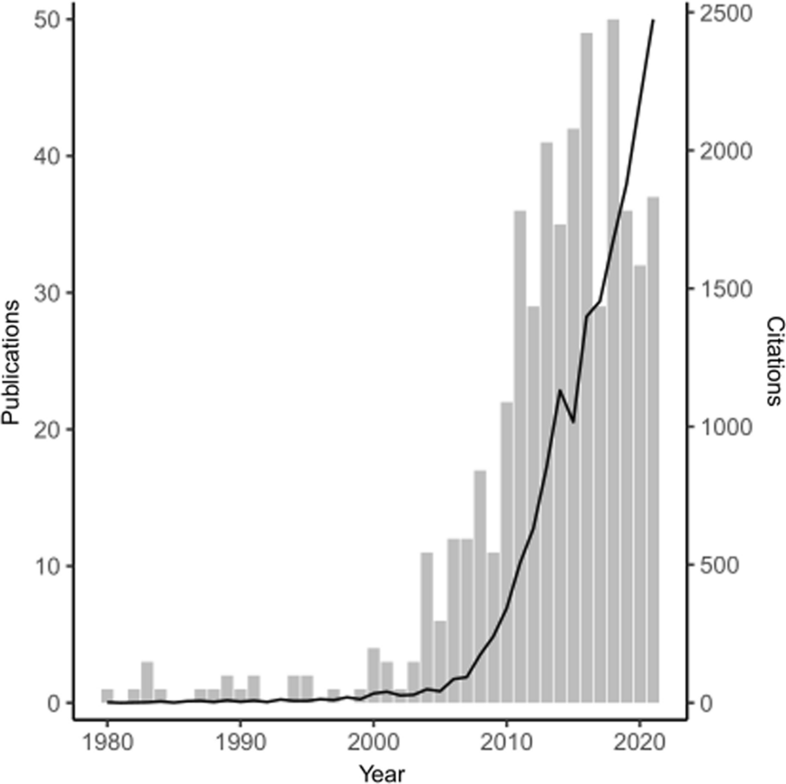
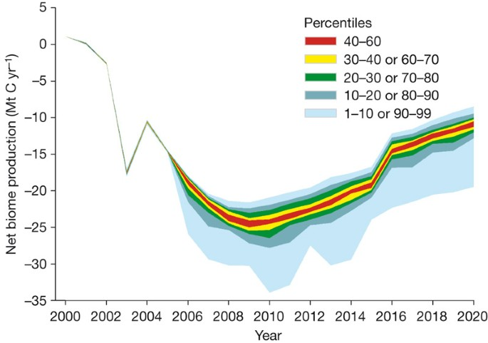

Quote 1
Temperature increases caused by climate change were a major factor driving the outbreak of mountain pine beetles…across millions of acres in and around Yellowstone National Park in the early 2000s, according to a new study by University of Idaho researchers and their partners.
This quote is important because it explains how climate change helped mountain pine beetles survive and spread across large forest areas. Warmer temperatures allowed more beetles to live through the winter, leading to major outbreaks around Yellowstone.
https://www.usgs.gov/news/climate-has-led-beetle-outbreaks-iconic-whitebark-pine-trees
Quote 2
In recent years, whitebark pine populations across its range have been compromised by the impacts of mountain pine beetle, blister rust, wildfire, and climate-induced drought.
This quote is important because it shows the mountain pine beetles are a part of the large environment of problems affecting forests. The quote explains that whitebark pine populations are already under stress from multiple threats, so beetle outbreaks can make the damage even worse. This is why the issue needs to be controlled before more forests are destroyed and the ecosystem becomes unstable.
https://www.nps.gov/articles/persistence-of-whitebark-pine-in-the-greater-yellowstone-ecosystem.htm
Graph 1

This graph is important because it shows that concern and research about wildfire connected to Mountain Pine Beetles has increased greatly over time. As beetle outbreaks spread and killed more trees, scientists began studying how dead trees increase wildfire risk. The rise in publication and citations after 2000 shows that this became a major environmental issue. Dead trees create more dry fuel in forests, which can make wildfires spread faster and become more dangerous.
https://link.springer.com/article/10.1007/s10980-023-01720-z
Graph 2

This graph shows the mountain pine beetles outbreaks cost of water to store less carbon after 2005. As more trees died, forests absorbed less carbon dioxide from the atmosphere. This is important because dead trees can increase carbon in the atmosphere and worsen climate change.
https://www.nature.com/articles/nature06777